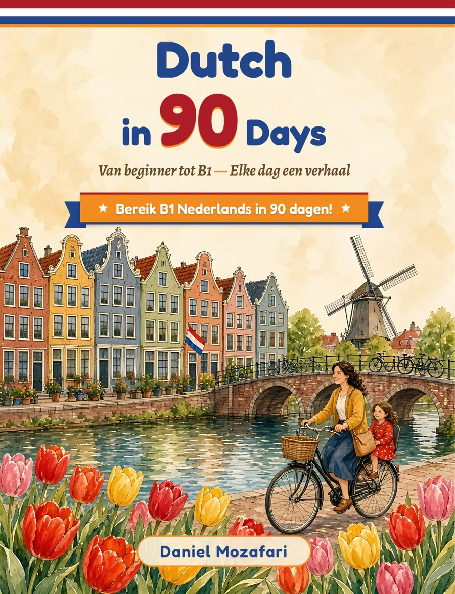

Van beginner tot B1 — Elke dag een verhaal
Daniel Mozafari
Welkom! Hier kun je het verhaal van elke dag uit het boek beluisteren – 90 korte verhalen over Sara’s nieuwe leven in Amsterdam, van A1 tot B1. Scan de QR-code bij elk verhaal, of kies hieronder een dag.
Download alle 90 audiobestanden (ZIP)ZIP · ongeveer 55 MB · MP3 · liefst via wifi, om offline te luisteren
Korte, eenvoudige verhalen in de tegenwoordige tijd. Sara komt in Amsterdam wonen.
Verleden tijd, plannen en het dagelijks leven in Sara’s eerste Nederlandse winter en lente.
Langere verhalen met rijkere grammatica: werk, wonen en het inburgeringsexamen.
Dutch in 90 Days van Daniel Mozafari brengt je in 90 dagen van A1 naar B1. Elke dag heeft een verhaal, een quiz, tien belangrijke woorden met uitspraak en een motivatiepagina. Deze opnames lezen elk verhaal precies zoals het in het boek staat. Oneven dagen: stem van Fenna; even dagen: stem van Maarten.